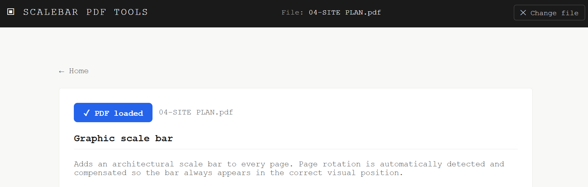
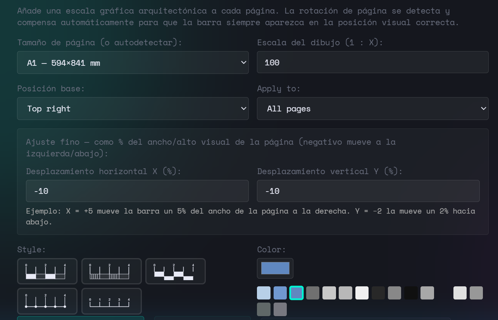
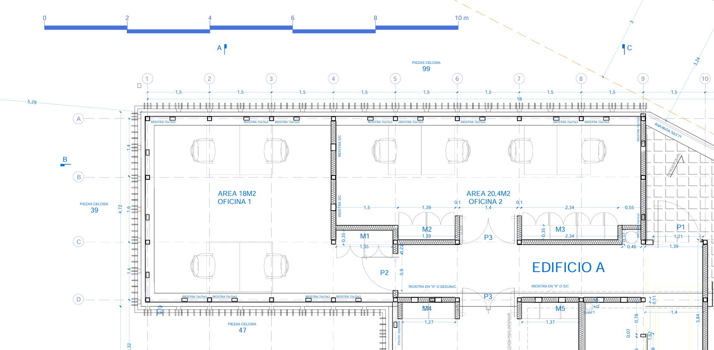

As an architect I kept running into the same situation: a PDF that needed a scale bar and no straightforward way to add one correctly. Not as decoration drawn by hand, but one that is mathematically tied to the drawing scale and paper size. So I built this tool. You can find it here.
The correct approach is to compute the bar length from the scale ratio and the paper format, then draw it at an exact point size. That is what this tool does automatically.
STEP 1 Open the Scale Bar tool and load your PDF
Navigate to the Scale bar (m) tool from the homepage and click Choose PDF. The file is loaded entirely in your browser — nothing is uploaded to any server.
If your drawings are in feet and inches, use the Scale bar (ft) tool instead. Both tools work identically, only the unit system changes.

STEP 2 Set your drawing scale — the bar length is calculated automatically
This is where automatic sizing matters. Select your drawing scale from the dropdown — 1:50, 1:100, 1:200, and so on. The tool detects the paper format from the PDF geometry and computes a bar length that is:
- A round number of metres (e.g. 5 m, 10 m, 20 m — never 7.3 m)
- Approximately 20% of the page width — legible without dominating the sheet
- Correct at the stated scale — if you print at 100%, the bar measures what it says
You can override the auto-sized length if needed, or select a specific page format manually if the PDF has non-standard dimensions. Position and offset are set as a percentage of the page width so they work regardless of page size.

STEP 3 Apply and download — or continue working on the same file
Click Add scale bar. The bar is drawn as vector content directly into the PDF content stream — it will print at full resolution regardless of the output DPI. Download the result immediately or click ↩ Keep working to promote it as the active file and apply further tools (title block, watermark, etc.) in the same session.

About automatic sizing
The auto-sizing logic works as follows: given scale 1:N and detected paper width W (in mm), the nominal bar length is computed as W × N × 0.20 in real-world units. That value is then rounded down to the nearest "nice" number — a multiple of 1, 2, 5, 10, 20, 50, 100, 250, 500 or 1000 m — so the label always reads cleanly. The final bar length in points is nice_metres × 1000 / N × (72/25.4).
This means that on an A1 sheet at 1:200 you get a 20 m bar (100 mm on paper), while on an A4 sheet at 1:50 you get a 2 m bar (40 mm on paper). You never need to calculate the bar length yourself.